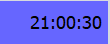

De los existentes en el equipo.
De los existentes en el equipo.Página principal de ayuda.
La aplicación consta de una ventana principal, con tres opciones.
• Una opción para la gestión de corredores. corredores.
• Una opción para la gestión de carreras. carreras.
• Una opción para la vista de la información sobre la lista de carreras finalizadas. Desde la que se puede ver el informe de la clasificación.
• En la esquina superior izquierda, se encuentra un reloj digital  encargado de salvar los registros realizados, cada 10 minutos.
• Desde la barra de menú se puede seleccionar la apariencia de las
ventanas, seleccionando diferentes lookAndFeel.
De los existentes en el equipo.